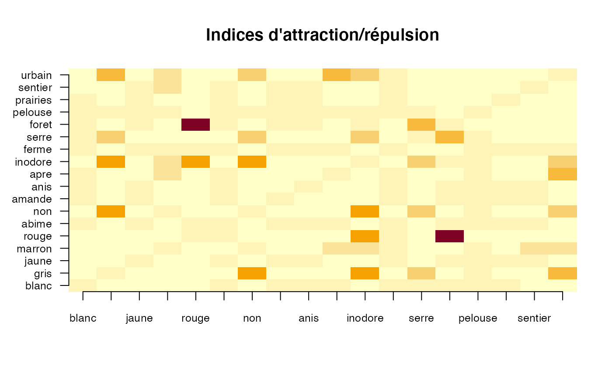
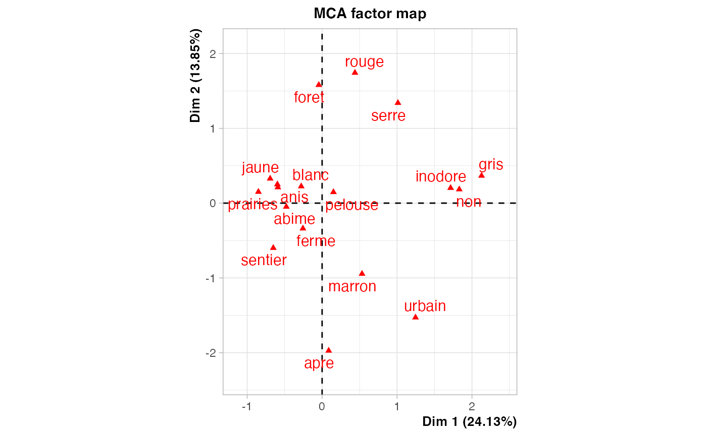
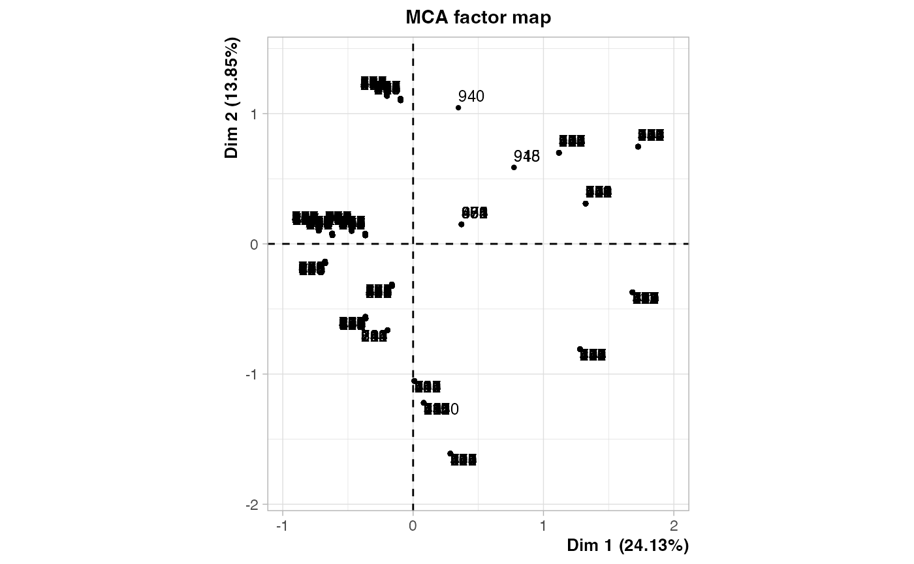
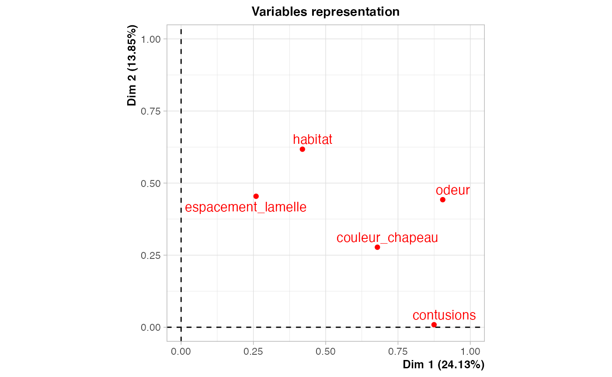
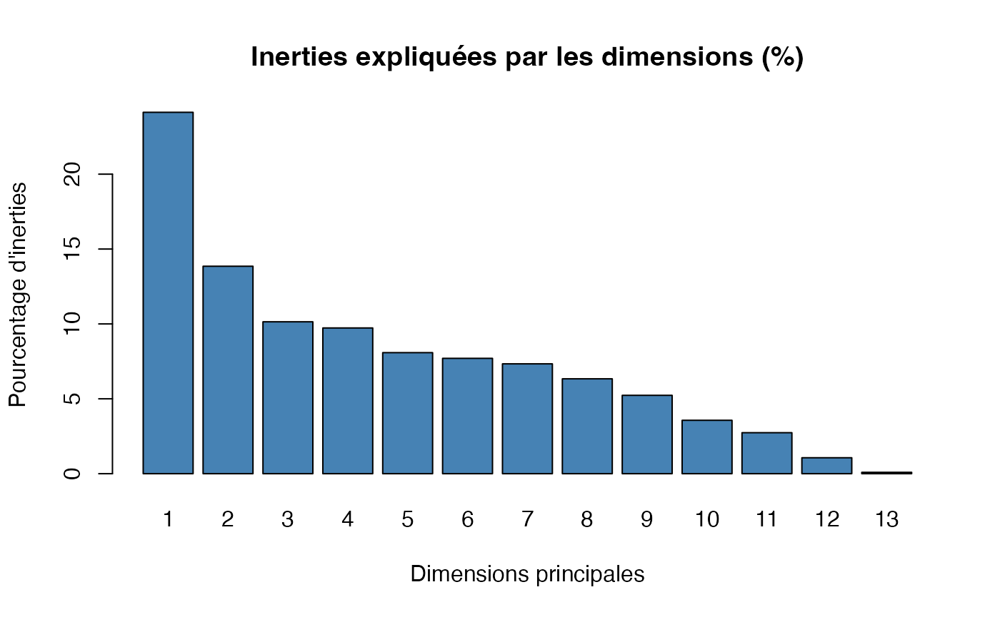

Chapitre 06. Exploration de données avec l’analyse des correspondances multiples.
Tout le code avec R.
Christian Derquenne
2021-08-07
Source:vignettes/CodeChap06.Rmd
CodeChap06.Rmd

|
|
Description des données
Caractéristiques de champignons
-
num_champ: numéro du champignon -
couleur_chapeau: couleur du chapeau -
contusions: contusions -
odeur: odeur du champignon -
espacement_lamelle: espacement des lamelles -
habitat: habitat -
classes: classes -
couleur_tige_dessus: couleur du dessus de la tige
Lecture des données
Sélection des variables de l’étude
champ_sel <- champignons[,c("couleur_chapeau","contusions","odeur","espacement_lamelle","habitat")]Exercice 6.2 : Indices d’attraction/répulsion
res.ind <- sageR::att_rep_ind(champ_sel)
round(res.ind$out_ind,2)
#> blanc gris jaune marron rouge abime non amande anis apre inodore
#> blanc 1.00 0.00 0.00 0.00 0.00 1.13 0.50 1.14 1.15 1.25 0.46
#> gris 0.00 1.00 0.00 0.00 0.00 0.03 4.73 0.00 0.00 0.00 4.41
#> jaune 0.00 0.00 1.00 0.00 0.00 1.26 0.00 1.47 1.51 0.00 0.00
#> marron 0.00 0.00 0.00 1.00 0.00 0.83 1.65 0.54 0.46 2.47 1.83
#> rouge 0.00 0.00 0.00 0.00 1.00 1.26 0.00 0.00 0.00 0.00 4.41
#> abime 1.13 0.03 1.26 0.83 1.26 1.00 0.00 1.26 1.26 1.26 0.11
#> non 0.50 4.73 0.00 1.65 0.00 0.00 1.00 0.00 0.00 0.00 4.41
#> amande 1.14 0.00 1.47 0.54 0.00 1.26 0.00 1.00 0.00 0.00 0.00
#> anis 1.15 0.00 1.51 0.46 0.00 1.26 0.00 0.00 1.00 0.00 0.00
#> apre 1.25 0.00 0.00 2.47 0.00 1.26 0.00 0.00 0.00 1.00 0.00
#> inodore 0.46 4.41 0.00 1.83 4.41 0.11 4.41 0.00 0.00 0.00 1.00
#> ferme 0.97 0.61 1.11 1.04 1.25 1.13 0.51 1.11 1.10 1.25 0.58
#> serre 1.13 2.53 0.56 0.83 0.00 0.50 2.92 0.58 0.60 0.00 2.66
#> foret 1.24 0.21 1.14 0.73 10.00 1.26 0.00 1.16 1.22 0.00 0.88
#> pelouse 1.05 1.11 0.94 0.97 0.00 0.93 1.28 0.95 0.93 1.02 1.16
#> prairies 1.46 0.00 1.52 0.00 0.00 1.26 0.00 1.51 1.47 0.00 0.00
#> sentier 0.00 0.00 1.46 2.19 0.00 1.26 0.00 1.42 1.56 0.00 0.00
#> urbain 0.49 3.37 0.00 2.21 0.00 0.49 2.95 0.00 0.00 3.81 2.69
#> ferme serre foret pelouse prairies sentier urbain
#> blanc 0.97 1.13 1.24 1.05 1.46 0.00 0.49
#> gris 0.61 2.53 0.21 1.11 0.00 0.00 3.37
#> jaune 1.11 0.56 1.14 0.94 1.52 1.46 0.00
#> marron 1.04 0.83 0.73 0.97 0.00 2.19 2.21
#> rouge 1.25 0.00 10.00 0.00 0.00 0.00 0.00
#> abime 1.13 0.50 1.26 0.93 1.26 1.26 0.49
#> non 0.51 2.92 0.00 1.28 0.00 0.00 2.95
#> amande 1.11 0.58 1.16 0.95 1.51 1.42 0.00
#> anis 1.10 0.60 1.22 0.93 1.47 1.56 0.00
#> apre 1.25 0.00 0.00 1.02 0.00 0.00 3.81
#> inodore 0.58 2.66 0.88 1.16 0.00 0.00 2.69
#> ferme 1.00 0.00 0.25 0.92 1.25 1.25 1.25
#> serre 0.00 1.00 3.96 1.31 0.00 0.00 0.00
#> foret 0.25 3.96 1.00 0.00 0.00 0.00 0.00
#> pelouse 0.92 1.31 0.00 1.00 0.00 0.00 0.00
#> prairies 1.25 0.00 0.00 0.00 1.00 0.00 0.00
#> sentier 1.25 0.00 0.00 0.00 0.00 1.00 0.00
#> urbain 1.25 0.00 0.00 0.00 0.00 0.00 1.00Exercice 6.3 : parts des inerties expliquées des deux premières composantes principales
res.ACM <- FactoMineR::MCA(champ_sel)
#> Warning: ggrepel: 1 unlabeled data points (too many overlaps). Consider
#> increasing max.overlaps
eig.val <- res.ACM$eigExercice 6.4 : nombre de composantes à sélectionner
barplot(eig.val[, 2],
names.arg = 1:nrow(eig.val),
main = "Inerties expliquées par les dimensions (%)",
xlab = "Dimensions principales",
ylab = "Pourcentage d'inerties",
col ="steelblue")
Exercice 6.6 : Contributions et reconstitutions des modalités
round(res.ACM$var$contrib[,1:3],2)
#> Dim 1 Dim 2 Dim 3
#> blanc 0.84 0.94 6.52
#> gris 13.57 0.70 9.91
#> jaune 5.11 1.99 7.88
#> marron 2.12 11.61 4.81
#> rouge 0.01 0.17 1.65
#> abime 5.77 0.10 0.82
#> non 22.11 0.39 3.16
#> amande 3.72 0.83 0.48
#> anis 3.81 1.17 0.49
#> apre 0.03 22.05 17.73
#> inodore 21.28 0.52 1.27
#> ferme 1.67 5.10 1.83
#> serre 6.59 20.13 7.25
#> foret 0.01 13.86 25.03
#> pelouse 0.34 0.56 0.12
#> prairies 5.09 0.28 8.71
#> sentier 1.06 1.56 2.34
#> urbain 6.89 18.05 0.00
round(res.ACM$var$cos2[,1:3],2)
#> Dim 1 Dim 2 Dim 3
#> blanc 0.04 0.03 0.13
#> gris 0.47 0.01 0.14
#> jaune 0.24 0.05 0.16
#> marron 0.09 0.27 0.08
#> rouge 0.00 0.00 0.02
#> abime 0.87 0.01 0.05
#> non 0.87 0.01 0.05
#> amande 0.18 0.02 0.01
#> anis 0.18 0.03 0.01
#> apre 0.00 0.44 0.26
#> inodore 0.86 0.01 0.02
#> ferme 0.26 0.45 0.12
#> serre 0.26 0.45 0.12
#> foret 0.00 0.28 0.37
#> pelouse 0.02 0.02 0.00
#> prairies 0.20 0.01 0.15
#> sentier 0.04 0.03 0.03
#> urbain 0.25 0.38 0.00Exercice 6.7 : Valeurs-tests des modalités
round(res.ACM$var$v.test[,1:3],3)
#> Dim 1 Dim 2 Dim 3
#> blanc -6.292 5.066 11.387
#> gris 21.665 3.727 -12.004
#> jaune -15.491 7.325 -12.478
#> marron 9.308 -16.514 9.092
#> rouge 0.438 1.743 4.669
#> abime -29.560 -2.972 7.239
#> non 29.560 2.972 -7.239
#> amande -13.242 4.747 -3.093
#> anis -13.416 5.641 -3.107
#> apre 0.936 -21.015 16.124
#> inodore 29.372 3.474 -4.661
#> ferme -16.093 -21.303 -10.937
#> serre 16.093 21.303 10.937
#> foret -0.466 16.641 19.138
#> pelouse 4.426 4.312 1.730
#> prairies -14.310 2.538 -12.134
#> sentier -5.990 -5.510 -5.784
#> urbain 15.831 -19.418 -0.053Exercice 6.9 : Valeurs des rapports de corrélations
round(res.ACM$var$eta2[,1:3],3)
#> Dim 1 Dim 2 Dim 3
#> couleur_chapeau 0.679 0.278 0.406
#> contusions 0.875 0.009 0.052
#> odeur 0.905 0.442 0.263
#> espacement_lamelle 0.259 0.454 0.120
#> habitat 0.420 0.618 0.477